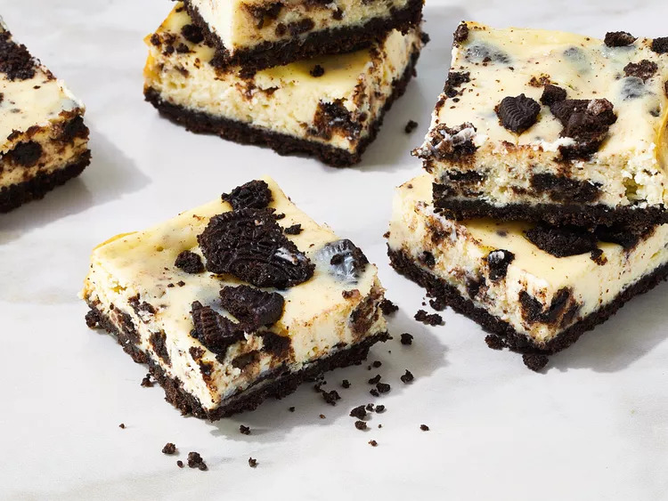

Oreo Cheesecake Bars

Description
These oreo cheesecake bars are simply irresistible for everyone loving cookies and cream. They are surprisingly easy to make and are the perfect treat for lots of people. (Source: allrecipes.com)
Ingredients
- nonstick cooking spray
- 1 (19.1-ounce) package chocolate sandwich cookies with white filling (such as Oreo(s)®), divided
- 1/4 cup salted butter
- 3(8-ounce) packages cream cheese, softened
- 1 cup sugar
- 3/4 cup sour cream
- 3 large eggs
- 1 teaspoon vanilla extract
- 1/4 teaspoon salt
Steps
- Step 1: Gather all ingredients. Preheat the oven to 325 degrees F (165 degrees C).
- Step 2: Line a 13x9x2-inch baking pan with heavy-duty foil, allowing 2 inches of overhang on two opposite sides of the pan. Coat foil lightly with nonstick cooking spray; set aside.
- Step 3: Place 30 cookies in a food processor. Cover and pulse until finely ground.
- Step 4: Add melted butter and pulse just until combined.
- Step 5: Transfer mixture to the prepared pan. Press crumbs evenly into the bottom of the pan.
- Step 6: Bake in the preheated oven until set, about 10 minutes.
- Step 7: Meanwhile, combine cream cheese and sugar in a large bowl and beat with an electric mixer on high until light and fluffy, about 3 minutes.
- Step 8: Add sour cream, eggs, vanilla, and salt. Beat until just combined.
- Step 9: Coarsely crush the remaining oreo(s) by placing them in a resealable bag and hitting it with a rolling pin.
- Step 10: Reserve 1/2 cup of the cookie crumbs. Fold the remaining crumbs into the batter.
- Step 11: Pour batter evenly over pre-baked crust, smoothing the top as necessary.
- Step 12: Sprinkle with reserved cookie crumbs.
- Step 13: Bake in the preheated oven until the center appears set, with a slight jiggle, 35 to 40 minutes.
- Step 14: Cool in a pan on a wire rack for 2 hours, or until completely cool. Cover and chill for at least 1 hour.
- Step 15: Remove uncut bars from the pan by lifting foil.
- Step 16: Cut into 2x2-inch bars to serve.
return home